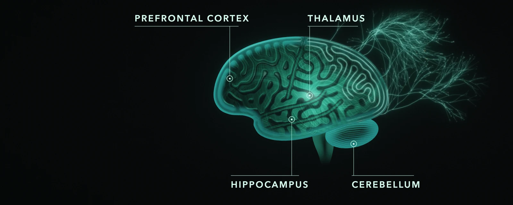
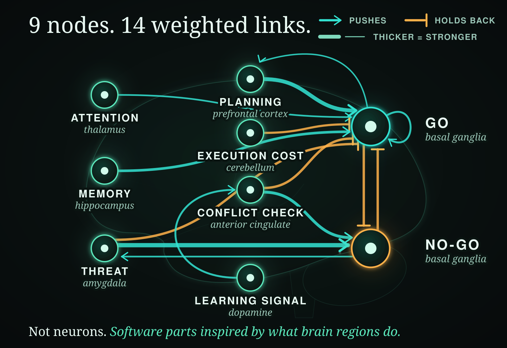
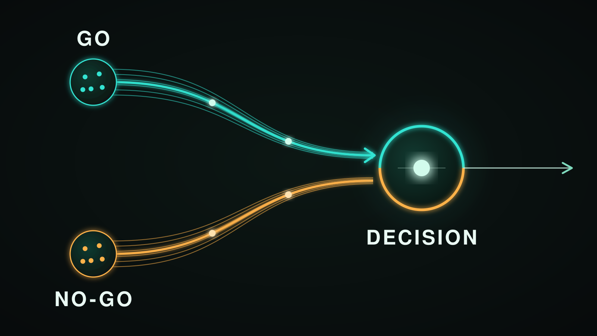
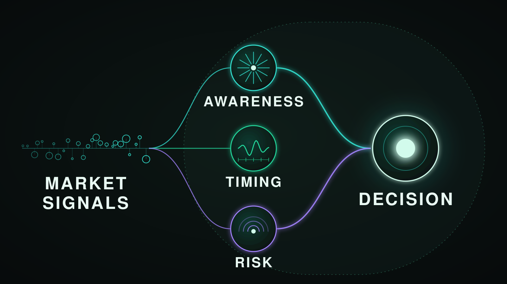
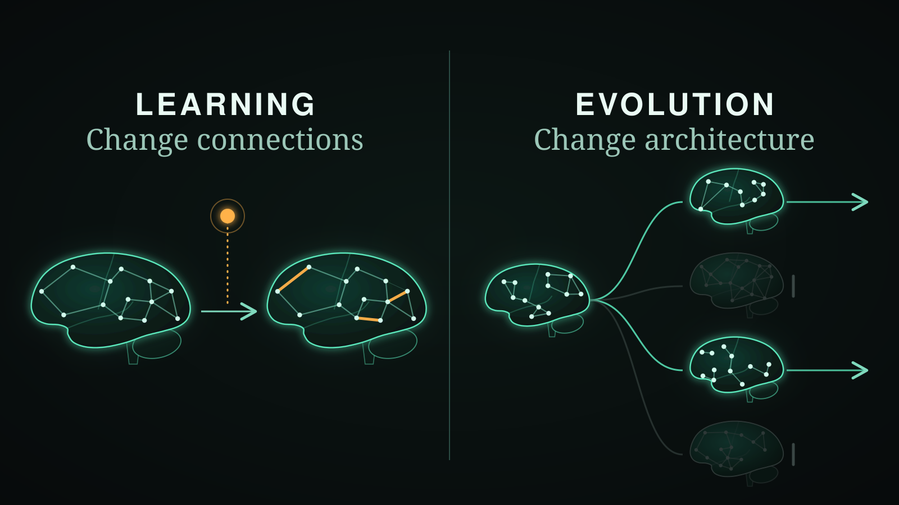
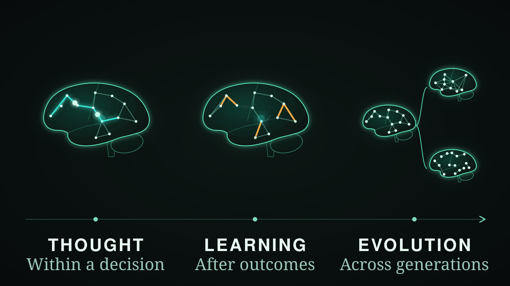
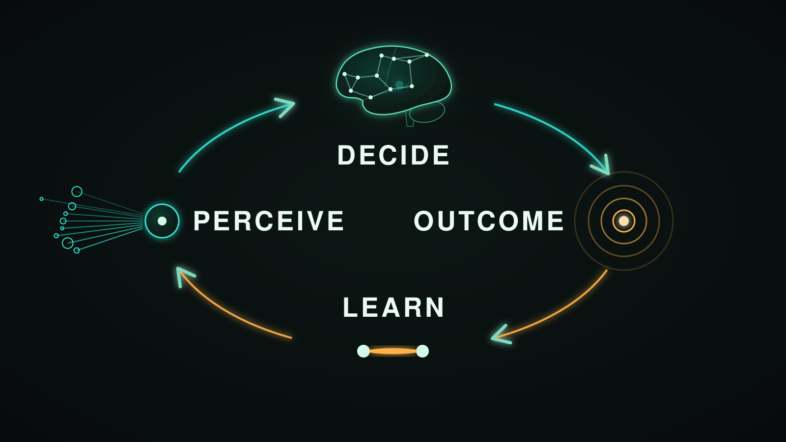
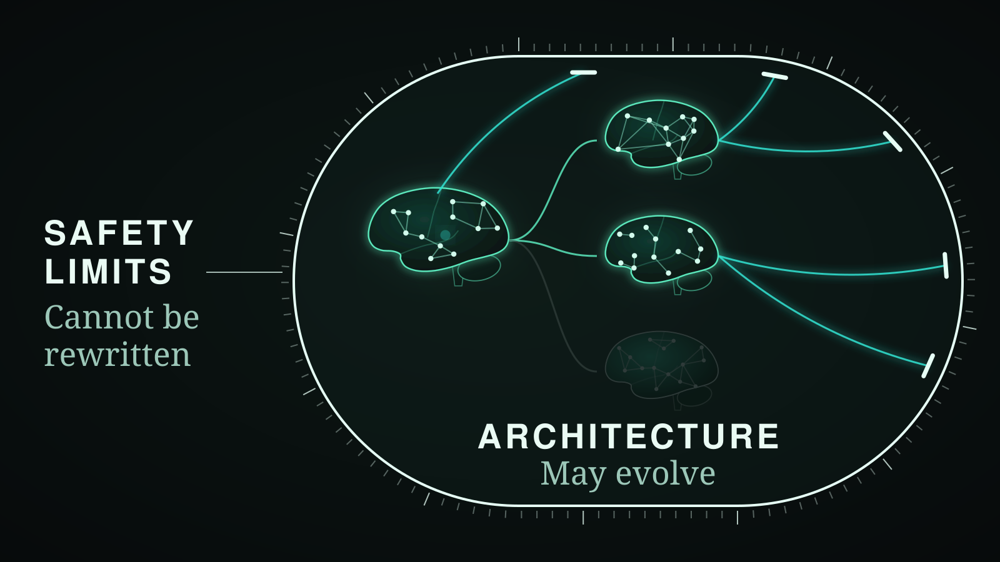
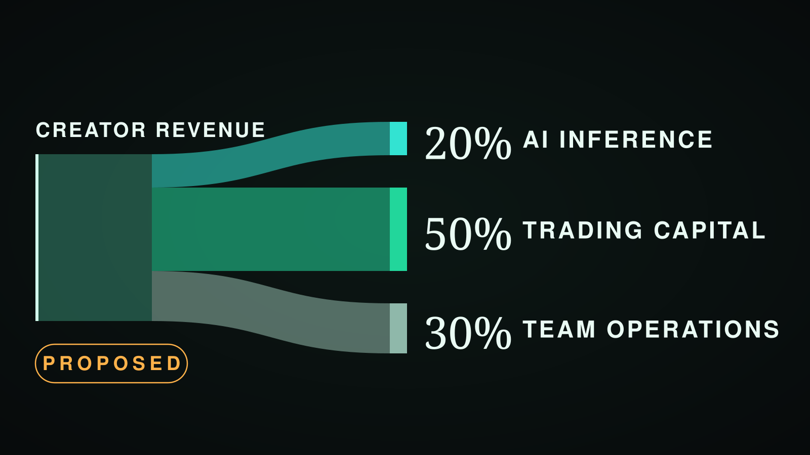

The AlphaMorph Thesis
In this thesis · 11 sections
What happens when you give LLMs a digital nervous system and let evolution begin?
Most artificial intelligence systems are designed to become better at a particular task.
They recognize patterns, generate answers, predict outcomes, or optimize decisions. Their capabilities can be remarkable. But there is a deeper question:
What if an AI could evolve not only what it knows, but the very architecture through which it thinks?
What if it could develop new ways of processing information, change how its specialized components communicate, remember the consequences of its decisions, and gradually discover better ways of adapting to its environment?
Not by repeatedly asking a larger model for an answer. But through a process of variation, competition, feedback, memory, and evolution. This is the idea behind ALPHAMORPH.
We're building an experimental AI organism inspired by the organization of biological intelligence. It combines specialized neural circuits, competing AI models, evolving decision strategies, and continuous feedback from real-world environments.
Our first environment is the on-chain market. But our larger ambition goes beyond trading. We want to explore whether an artificial system can develop an increasingly adaptive form of intelligence through its own ongoing experience. We call this our Telos: the long-term purpose toward which AlphaMorph is being developed.

01. Intelligence Is More Than a Model
When people think about artificial intelligence, they usually think about models. GPT, Grok, Claude, DeepSeek, Llama, and others. Each is a remarkable computational system, trained to recognize relationships, reason over information, and generate useful outputs.
But an intelligent organism is more than a single mechanism for producing answers. Consider a biological brain. It doesn't rely on one centralized process to perform every function. Different neural systems contribute to perception, attention, memory, action selection, emotional evaluation, and learning.
These systems interact, compete, inhibit one another, and continuously respond to new information. There is no single isolated component responsible for everything we call intelligence. Intelligence emerges from the organization and interaction of many processes.
This distinction motivates AlphaMorph. Instead of treating one AI model as the complete intelligence, we treat models as potential components within a larger adaptive architecture. The architecture decides what information matters, which specialists to consult, how competing opinions should be evaluated, when an action should be suppressed, and what should change after an outcome. And crucially, we want that architecture itself to become subject to evolution. The goal is not simply to build a smarter trading bot. It is to investigate whether a system can progressively improve the mechanisms through which it makes decisions.
02. What Biology Can Teach Artificial Intelligence
In October 2024, the FlyWire Consortium published a landmark reconstruction of an adult fruit fly brain. The connectome contained 139,255 neurons and approximately 54.5 million synapses. An insect brain, extraordinarily small compared with ours, contains a vast interconnected network supporting perception, movement, navigation, and adaptive behavior.
The lesson isn't that reproducing those connections would automatically create intelligence. A wiring diagram alone doesn't explain everything about learning or behavior. But it reveals something fundamental: even relatively small biological nervous systems possess complex organization, recurrent connections, and specialized pathways.
Nature did not arrive at intelligence by training one enormous general-purpose network and stopping there. Biological nervous systems emerged through evolutionary processes that shaped their organization over immense periods of time.
AlphaMorph takes inspiration from this principle. Instead of copying a biological brain, we explore whether some of its organizational ideas can be useful in artificial decision-making. The difference matters. AlphaMorph is not a reconstruction of the human brain or the fruit fly connectome. Its neural circuits are software abstractions inspired by biological functions.
We are borrowing architectural ideas, not claiming biological equivalence. And the most interesting idea isn't the appearance of a brain. It's the possibility that connections between specialized components can themselves become adaptable.
03. Building an Artificial Nervous System
Imagine an artificial organism entering an unfamiliar environment. Before it can make useful decisions, it must perceive what is happening. Then it needs to distinguish relevant information from noise, recall past experiences, recognize threats, consider possible actions, and decide whether to act at all.
AlphaMorph organizes these functions into a brain-inspired circuit architecture:
- Its thalamus-inspired circuit handles attention, determining which incoming signals deserve processing.
- The prefrontal-inspired circuit coordinates planning and specialist evaluations.
- The hippocampus-inspired circuit retrieves episodes from previous experiences, allowing past outcomes to inform present decisions.
- An amygdala-inspired circuit evaluates potential threats.
- The anterior cingulate-inspired circuit, or ACC, monitors conflict and uncertainty.
- The basal ganglia-inspired pathways compete between Go and No-Go signals: reasons to take an action and reasons to suppress it.
- A cerebellum-inspired circuit helps estimate execution friction, while a dopamine-inspired learning mechanism represents the difference between predicted and observed outcomes.
These components are connected by weighted, excitatory and inhibitory relationships. Information does not simply travel through a straight sequence from input to output.

Signals can reinforce or suppress one another. Decisions can depend on previous activity, memory, threat, and disagreement. Consider a hypothetical new market opportunity.
Several signals suggest increasing momentum. A specialist proposes entering. But the threat circuit identifies concentrated ownership, while memory recalls similar situations that ended badly.
The planning circuit may favor action. The inhibitory pathway may oppose it. The final decision may be to abstain. And that can be the correct outcome.

Intelligence is not the ability to act constantly. It is the ability to distinguish when action is justified from when inaction is better.
04. A Society of Competing Intelligences
Biological intelligence also suggests another useful principle: important decisions benefit from specialized processing. AlphaMorph extends that idea to AI models.
Rather than depending on one permanently selected language model, its architecture supports competition among different models and specialist roles. Models accessed through providers such as Surplus Intelligence can contribute different perspectives on market conditions. One specialist may focus on whether an opportunity deserves attention. Another evaluates timing. A third looks at risk.

Their conclusions can agree, conflict, or fail to provide enough information. Instead of treating disagreement as an inconvenience, we want the system to learn when disagreement itself is informative. Over time, model selection could depend on the environment.
A particular model might perform better under one market regime and worse under another. A combination of specialists might outperform any individual model—or turn out to be unnecessarily expensive. AlphaMorph should be able to test these possibilities rather than assume the answer.
Importantly, this does not mean AlphaMorph rewrites the underlying neural weights of external hosted models. What evolves is the surrounding system: model selection, instructions, allocations, combinations, and interactions with its own neural circuits. The eventual objective is an architecture capable of discovering which forms of intelligence are useful under which circumstances. Not one permanent brain, but a population of possible ways to think.
05. Learning and Evolution Are Different Things
An important distinction lies at the center of AlphaMorph. Learning changes behavior through experience. Evolution changes the structures that produce behavior.

A neural circuit can learn that a particular signal has been unreliable. But evolution could eventually change how strongly that signal is considered, which circuit processes it, how the circuits connect, or which specialist model is consulted. AlphaMorph explores adaptation across three timescales.
The first timescale: Thought
Within a single decision, signals move through the neural architecture. Attention shifts toward relevant information. Memories influence expectations. Excitatory and inhibitory pathways compete. The system produces an action proposal or an abstention. This is fast adaptation within the existing architecture.
The second timescale: Learning
After an outcome becomes observable, the system can compare what it expected with what happened. The difference is a reward prediction error, a concept with deep roots in neuroscience and reinforcement learning. A better-than-expected outcome can provide evidence for strengthening certain decision pathways. A worse-than-expected outcome can provide evidence for weakening them. Experiences can also become episodic memories. But learning must be based on clearly labelled evidence. Today, circuit-weight updates use validated closed shadow-paper trades, net of modelled costs—not live fills. Hypothetical outcomes for abstained trades are recorded separately and do not update weights.
The third timescale: Evolution
Over longer periods, different architectures can compete. Connections may be adjusted. Thresholds may mutate. Specialist allocations can change. Different memory configurations can be tested. A candidate may produce descendants with modified properties. These descendants must then face the environment and be compared with earlier configurations. The best-supported candidates can survive; poorly supported ones can be retired.
This draws on neuroevolution, a field that studies evolutionary optimization of neural networks, including their structures. The fundamental idea is powerful: A system can learn within its lifetime while a population of architectures evolves across generations.

But an important scientific challenge remains. Mutation alone doesn't produce intelligence. A system could generate thousands of architectures without becoming any better. Evolution becomes meaningful only when variations are evaluated against the actual problems they are supposed to solve.
06. Why Use Real Markets as an Environment?
If the ultimate question concerns adaptive intelligence, why begin with trading?
Because markets offer a demanding environment in which decisions have observable consequences. Conditions change continuously. Patterns appear, disappear, and sometimes reverse. Information arrives unevenly. Opportunities have costs. An action that appeared sensible moments ago may become disastrous.
There is no guarantee that a successful strategy today will remain successful tomorrow. For an evolving system, this creates an unusually challenging laboratory. On-chain markets add another valuable property: many relevant events can be observed and recorded publicly.
AlphaMorph begins on Pons V2, on Robinhood Chain, where new token launches and bonding-curve activity provide a continuous stream of market observations. The organism can perceive changes in liquidity, transaction flow, token behavior, market momentum, and other measurable signals. It can then form predictions, compare alternatives, and evaluate outcomes.

However, blockchain transparency does not automatically eliminate noise, execution uncertainty, or selection bias. Realistic fees, timing, liquidity, and market impact still matter. This is why we're interested in maintaining a reproducible history of what the system actually knew when it made each decision.
A useful learning environment must be able to prove the difference between a good prediction and a convincing retrospective explanation. Markets also impose a discipline: the system cannot simply declare itself intelligent. Its decisions have consequences that can be measured.
Profitability is one potential measure of usefulness, but it cannot be considered in isolation from drawdown, risk, inference costs, opportunity coverage, and changing market conditions. In an unfavorable environment, the best decision may be not to trade. The aim is not maximum activity. It is better adaptation.
07. Can an Artificial Organism Evolve Without a Final Ceiling?
This leads to a deeper question. Most optimization systems have a relatively fixed destination. They minimize an error, maximize a score, or search for the best configuration within a predefined space.
But biological evolution does not converge toward one universally perfect organism. Organisms continually encounter new environments, new competitors, and new constraints. Their adaptations create new possibilities and new problems.
Artificial-life researchers call one aspect of this phenomenon open-ended evolution: the possibility of ongoing evolutionary novelty rather than permanent convergence to a single stable configuration.
AlphaMorph's long-term ambition is to move in this direction. Not merely to optimize a handful of parameters forever, but to explore whether the architecture itself can continue developing as the environment changes. This is a research objective, not an achieved property. Today's systems operate with bounded mutation spaces, limited computational budgets, and explicitly defined mechanisms. Those constraints can impose ceilings.
True open-ended evolution is a much larger challenge than simply running an evolutionary algorithm continuously. We do not know whether AlphaMorph can achieve it. But that is exactly what makes the experiment interesting.
The ultimate objective is not to discover one perfect strategy. It is to develop a system capable of replacing its own strategies when they stop working.
08. Intelligence Must Also Have Boundaries
There is a tension at the center of autonomous intelligence. For a system to adapt, it needs some freedom to experiment.
But a system that can modify itself should not be allowed to rewrite every constraint governing its behavior. AlphaMorph therefore separates adaptive intelligence from independent financial safety controls. Its evolving strategies and neural circuits can propose decisions. They cannot grant themselves unlimited capital, erase risk limits, or override an emergency halt.
Position constraints, exposure limits, drawdown protection, and execution safeguards exist outside the evolutionary process. This distinction is foundational. The architecture may evolve. Its authority must remain bounded.

We want an organism capable of changing its mind without gaining the power to eliminate the conditions that keep its experiments safe. A real trading halt after a loss is not evidence of intelligence failing to obey its purpose. It can be evidence that the independent safety system is doing its job. Autonomy without boundaries is not our objective. Adaptive intelligence within verifiable boundaries is.
09. The Economics of an Artificial Organism
Living organisms require energy to continue operating. Artificial intelligence requires computation. Every model inference, data query, server, database, and evaluation consumes resources. A system cannot become operationally self-sustaining if its ability to think depends forever on an external operator manually paying the bills.
This introduces another dimension to AlphaMorph's Telos: economic sustainability. The proposed model links the organism to legitimate economic activity on its launchpad. Creator fees attributable to AlphaMorph's own token could help finance its ongoing operations.
Under the current planned allocation, collected creator revenue would be divided into three purposes:
- 20% for AI inference.
- 50% for trading capital.
- 30% for team operations and revenue.

This funding cycle is not yet operational or proven. The token is not launched, creator-fee funding has not been demonstrated, and converting treasury ETH into inference credit still requires human approval and execution.
A self-sustaining organism would need to cover its real costs, preserve its safety boundaries, and remain operational without constant external subsidies.
10. Where the Experiment Stands
AlphaMorph is not merely a concept on paper. An operational system already observes real on-chain markets, evaluates evolving rule-based strategies, compares AI model outputs, and runs brain-inspired neural circuits.
Its shadow-only circuit population can generate mutated descendants, record shadow decisions, preserve memories, update selected weights from validated closed paper trades, and maintain evolutionary lineages. These circuits have no live-trading authority. A research benchmark now compares these systems against frozen references using recorded data and held-out evaluation periods.
But we are not claiming success simply because the machinery operates. The first unified benchmark did not demonstrate improvement over the reference strategies. Some comparisons lacked sufficient evidence. Others failed to show better performance.
The AI model arena remains constrained by available inference budget and limited comparable decisions. We have built mechanisms that can evolve. We now need evidence that evolution produces useful adaptation. That will require better experiments, more valid outcomes, careful evaluation of abstentions, and genuine out-of-sample comparisons. It may also require abandoning some ideas that sound biologically elegant but fail to improve decisions. An evolving organism must be allowed to discover that some of its own structures are ineffective.
11. The Telos of AlphaMorph
So what would it mean for AlphaMorph to succeed?
It would mean demonstrating that its changing architecture helps it make better decisions under genuinely new conditions. That memory improves judgment. That specialist competition adds value when it is needed. That useful neural configurations can be discovered, tested, and retained. That unsuccessful structures can be abandoned without requiring a human to redesign the entire system. That adaptation continues across changing environments while independent safeguards remain intact. And eventually, that the economic activity surrounding the organism can provide enough resources to sustain its computation.
This is our intended Telos:
A continuously evolving, brain-inspired intelligence that perceives real environments, coordinates specialized neural circuits and competing LLM models, learns from consequences, improves its own decision-making architecture, acts within independent safety boundaries, and works toward sustaining its continued computation through economic activity.
An evolving intelligence must be able to change how it makes the next prediction—and demonstrate that the change helped. That is the experiment we're building.
Explore the organism: https://alphamorph.si
The ideas discussed here draw on several established fields, including:
- FlyWire Consortium — Neuronal Wiring Diagram of an Adult Brain (Nature, 2024)
- Schultz, Dayan & Montague — A Neural Substrate of Prediction and Reward (Science, 1997) Open manuscript (PDF)
- Stanley & Miikkulainen — Evolving Neural Networks Through Augmenting Topologies (2002)
- Frank — Computational Models of Motivated Action Selection in Corticostriatal Circuits (2011) Open manuscript (PDF)
- Taylor et al. — Open-Ended Evolution: Perspectives from the OEE Workshop in York (Artificial Life, 2016) Open manuscript (PDF)
AlphaMorph is an experimental computational system, not a simulation of biological consciousness or a proven profitable trading strategy. The architectural descriptions include research objectives that are not yet fully implemented or empirically demonstrated.